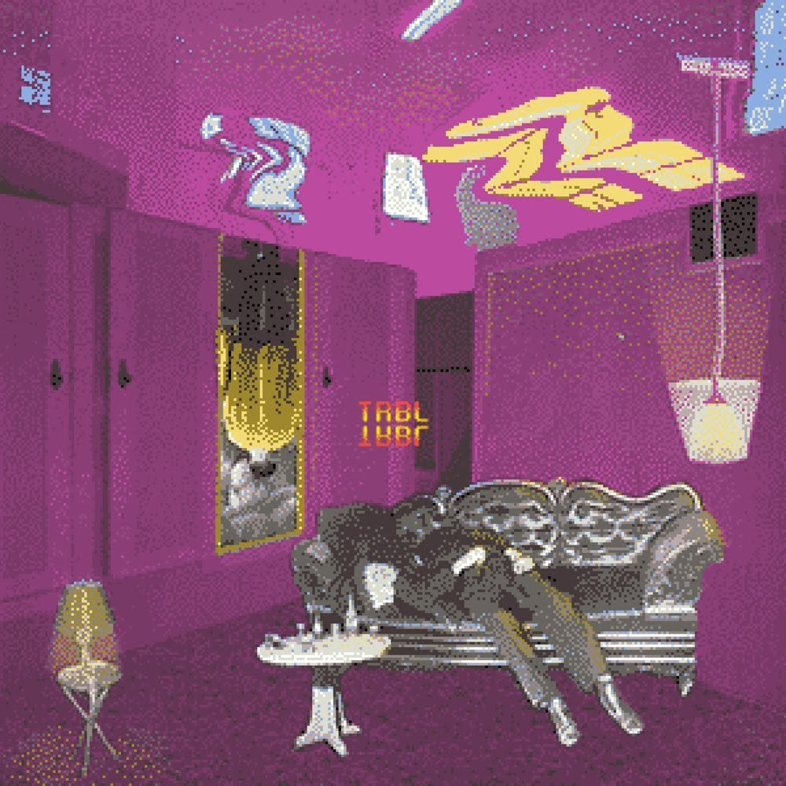
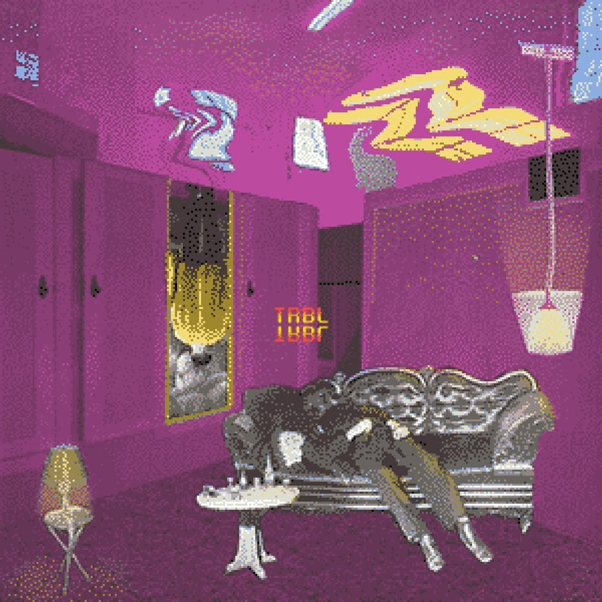

2NE1 2nd Mini Album is the second extended play of South Korean girl group 2NE1.
It was released on July 28, 2011, by YG Entertainment in distribution by KMP Holdings
in South Korea.
It contains six songs composed and produced by Korean producers
Teddy, Kush, and Lydia Paek.
Tracklist
| No. | Title | Length |
|---|---|---|
| 1. | I am The Best | 3:30 |
| 2. | Ugly | 4:08 |
| 3. | Lonely | 3:29 |
| 4. | Hate You | 3:33 |
| 5. | Don't Cry(Solo Park Bom) | 3:12 |
| 6. | Don't Stop The Music | 3:50 |
My favorite Track Preview
I am The Best
Ugly
Lonely
Hate You
Don't Cry(Solo Park Bom)
Don't Stop The Music
1989

1989 is the fifth studio album by American pop recording artist Taylor Swift. It was released on
October 27, 2014,
and features 13 songs. Swift named the album 1989 because,
in addition
to being the year in which she was born, the late '80s also influenced the music on her album.
Tracklist
| No. | Title | Length |
|---|---|---|
| 1. | Welcome to New York | 3:33 |
| 2. | Blank Space | 3:52 |
| 3. | Style | 3:51 |
| 4. | Out of the Woods | 3:56 |
| 5. | All You Had to Do Was Stay | 3:13 |
| 6. | Shake It Off | 3:39 |
| 7. | I Wish You Would | 3:27 |
| 8. | Bad Blood | 3:32 |
| 9. | Wildest Dreams | 3:40 |
| 10. | How You Get the Girl | 4:08 |
| 11. | This Love | 4:10 |
| 12. | I Know Places | 3:16 |
| 13. | Clean | 4:31 |
My favorite Track Preview
I know Places
Wonderland
This Love
HOLO
“HOLO” is about how loneliness can be overwhelming and oftentimes suffocating,
but LEE HI reassures that in time, the loneliness and difficulties are going to stop. But it’s not just loneliness that
she speaks on, but there is a deeper underlying meaning of struggling with mental health and other dark struggles that
may bring one down. LEE HI uplifts listeners through her encouraging and warm lyrics, stating that instead of letting these
emotions get the best of her, she’s going to push forward and not let them defeat her.
Tracklist
| No. | Title | Length |
|---|---|---|
| 1. | HOLO | 3:33 |
Track Preview
HOLO
Good Days

"Good Days" sees SZA singing about "former love, soul searching, and rejoicing carefreely" over "guitar-tinged riff plays", while she makes use of her "dreamy vocals". Compared to its predecessor, the song "manages to hit much more of a melodic, narrative-driven tone that puts it more in line with her CTRL output".
Tracklist
| No. | Title | Length |
|---|---|---|
| 1. | Good Days | 4:39 |
Track Preview
Good Days
D(Half Moon)


D(Half Moon) is about after a break up. He keeps comparing himself to a half moon, suggesting that not all of him is full. Half of his ex doesn’t satisfy him. He wants all of her, everything that she is. In the beginning, he talks about everything being the same. The ceiling fan still moves the same way, the bed is still as big as it is, etc. But oddly, nothing feels emotionally right. The empty bed feels even emptier, he’s spacing out, and his world is different. All he can think of his her and her presence, which he misses so much.
Tracklist
| No. | Title | Length |
|---|---|---|
| 1. | D(Half Moon) | 4:39 |
Track Preview
D(Half Moon)